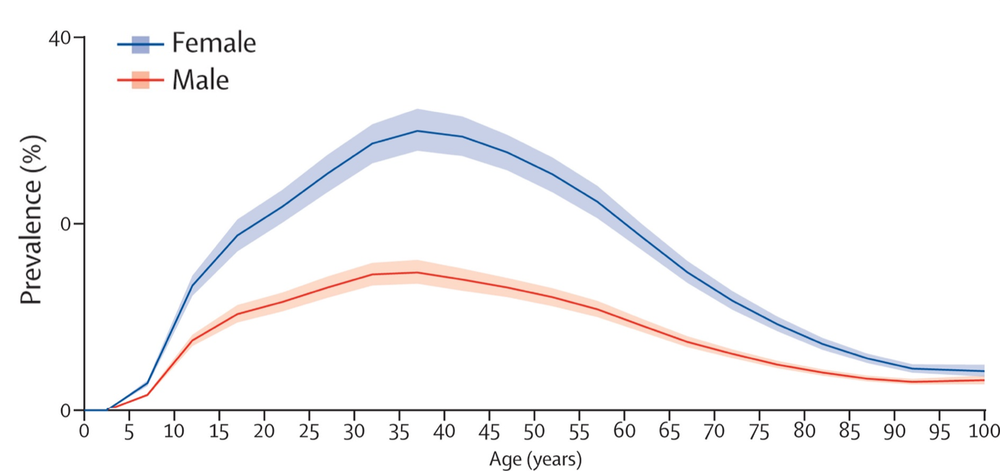

Q1. Qual par está correto sobre o ranking das cefaleias primárias?
Dado impactante
Por que enxaqueca manda na prova
Cerca de 2,5 a 3 mulheres para cada homem. E ainda assim — homem no caso não exclui enxaqueca.
Ranking prova × prática
A enxaqueca não é a cefaleia primária mais comum da prática — fica em segundo lugar. É, porém, a mais comum da prova, porque o quadro é florido e interessante.
A tensional é a mais comum da prática, mas cai menos (quadro “sem graça”). A salva é rara na prática e relativamente mais presente na prova, porque é um fenótipo de emergência e muito característico.
Sexo e ratio
A primeira palavra do caso-porta (“mulher”) já direciona epidemiologicamente. Enxaqueca é mais comum no sexo feminino: cerca de 2,5 a 3 mulheres para cada homem (ordem de grandeza; a estimativa é aproximada).
O gráfico do GBD 2016 mostra a sobreposição das curvas por sexo: mulheres em quase todas as faixas adultas; pico em idade fértil. O eixo vertical é prevalência, o eixo horizontal é idade. O “achatamento” pós-menopausa reforça o viés hormonal.
Homem não exclui
Não se exclui enxaqueca só porque o paciente do caso é homem. Existe enxaqueca em homens — sexo masculino não é critério de exclusão. É uma das pegadinhas clássicas de prova: usar o ratio como filtro diagnóstico.
História familiar / genética
História familiar positiva aparece com frequência (como no caso-porta: mãe com cefaleia na juventude, principalmente na menstruação). Há componente genético; em algumas situações é mais forte, em outras definitivamente presente.
O eixo de HF é mais um voto a favor do diagnóstico sindrômico — não fecha diagnóstico por si só.

homens, pico em adultos jovens), estimativa do Global Burden of Disease 2016." loading="lazy" decoding="async">GBD 2016 Headache Collaborators. Lancet Neurol. 2018;17(11):954–976 — CC BY 4.0 · DOI 10.1016/S1474-4422(18)30322-3 · fonte
Mulher > homem — mas homem não exclui
O gráfico confirma o predomínio feminino em quase todas as faixas etárias adultas. Pico em idade fértil. Epidemiologia informa, não fecha diagnóstico.
Quiz
Q2. Homem de 28 anos com cefaleia latejante unilateral incapacitante, náusea e fotofobia. Conduta conceitual: